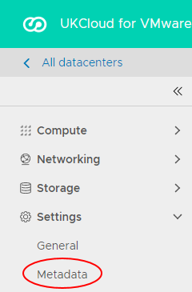
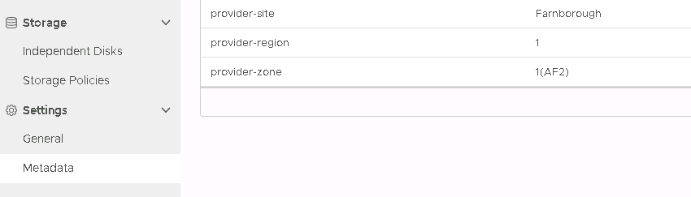

How to locate your virtual data centre on the UKCloud platform
Overview
Each virtual data centre (VDC) exists in a particular location within the UKCloud platform. UKCloud stores metadata against each VDC to indicate where within the platform the VDC resides. Using this metadata, you can locate your VDC by site, region and zone. For more information about the organisation of the UKCloud platform, see Understanding sites, regions and zones.
Knowing where your VDCs are located can be useful for:
Determining how resilient your applications are
Determining how scheduled or emergency maintenance or an unplanned outage may affect your applications
Providing additional information to help with support call resolution
This guide describes how to use vCloud Director to find out where your VDC is within the UKCloud platform. You can use the vCloud Director UI or the API.
The information provided by the VDC metadata is read-only. If you want to change the location of a VDC, raise a Support Request from the My Calls section of the UKCloud Portal.
Finding the location of a VDC using the vCloud Director Tenant UI
In the vCloud Director Virtual Datacenters dashboard, select the VDC that you want to locate.
For more detailed instructions on accessing vCloud Director, see the Getting Started Guide for UKCloud for VMware.
In the left navigation panel, select Metadata.

The following fields indicate the location of your VDC:
provider-site - indicates the site in which your VDC is located: Farnborough or Corsham
provider-region - indicates the region in which your VDC is located, for example 1 or 5.
provider-zone - indicates the zone in which your VDC is located, for example 1(AF2) or B

Note
If you set up your VDC to use Synchronous Protection, then the VDC is stretched across multiple sites. The metadata indicates this as follows:
- provider-protection-synchronous is Yes
- provider-site - indicates that your VDC is stretched across both sites: Farnborough or Corsham
- provider-region - indicates that your VDC is stretched across multiple regions, for example 1 or 2
- provider-zone - indicates that your VDC is stretched across multiple zones, for example 1(AE1) or 2(AE2)
You can use VM location to locate individual VMs within the VDC. For more information, see How to use VM location in vCloud Director.
When you're done, click Cancel.
Finding the location of a VDC using the vCloud Director API
You can also find the location of your VDC by calling the vCloud Director API. For more information about the vCloud Director API, see vCloud Director API Guide.
For example, to retrieve all the metadata for a specified VDC, call the GET /vcd/<id>/metadata endpoint.
Feedback
If you find a problem with this article, click Improve this Doc to make the change yourself or raise an issue in GitHub. If you have an idea for how we could improve any of our services, send an email to feedback@ukcloud.com.